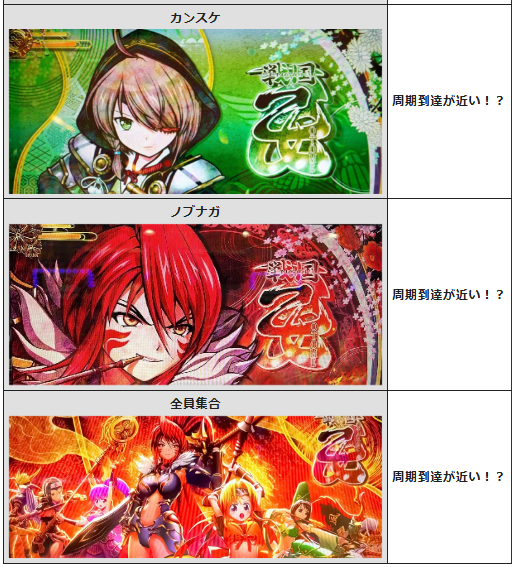
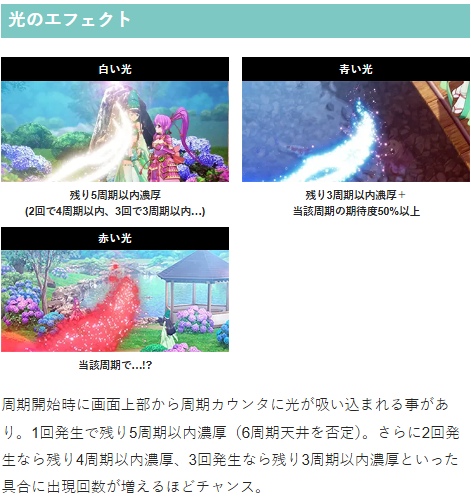

戦国乙女5 業火を穿つ宿焔の双刃 🆕


狙い目
【リセット狙い】
ゲーム数天井
260Gから（周期や液晶ゲーム数が進んでいない想定）
※液晶メニュー画面からATハマりゲーム数確認可能
周期天井
3周期目から
【ゲーム数天井狙い】
620Gから（周期や液晶ゲーム数が進んでいない想定）
※液晶メニュー画面からATハマりゲーム数確認可能
【周期別周期狙い】
1周期 液晶140Gから
2.3周期 液晶395Gから
4周期 液晶380Gから
5周期以降 「周期天井狙い」へ
※1周期目は最大200G。
※液晶400Gを超えると次回モードB以上。
※チャンスモード（50G天井）まで到達するとモード転落する。
【モード予測と狙い目】
モードCの場合はチャンスモード（50Gゾーン天井）に移行するまで打って良さそう？
1周期以外で液晶100Gゾーンでの前兆「繚乱の刻」移行した場合はモードC？
※周期回到達でデータ機に信号が上がらないため履歴からの判別は不可。ただし目視で液晶100G/300Gゾーン当選または前兆ステージ移行確認時はモードBorC濃厚と思われる。
※チャンスモードまで転落なしの仕様を叩くなら、この挙動を確認した後は次回ボーダーを下げて立ち回り可能と思われる。
※強カワチャンスでゲーム数加算される仕様のため液晶のゲーム数で判断。
【周期天井狙い】
5周期目から
周期テーブルB以上濃厚 AT当選まで？
【巫女カウンター】
残り70ptから
【示唆関連の押し引きについて】
乙女ストラップ
（同じキャラ3人の場合）
ヒデヨシ、ヨシテル AT当選まで
ゴエモン 液晶100Gから
ミツヒデ ボーダーをAT間は200G、周期狙いは液晶100Gボーダーを下げる
（同じキャラ2個が2回出現の場合）
ヨシテル AT当選まで
※例：ヨシテル2個が2回出現の場合は期待度94.5％になるため打てそう。
AT終了画面
敵集合、乙女4人、乙女集合A、乙女集合B AT当選まで
アイキャッチ
カンスケ（緑背景のキャラ） 当該液晶180Gから 4周期以降出現時はAT当選まで
ノブナガ（赤背景のキャラ）当該周期消化まで
全員集合 当該周期消化まで
ヒデヨシのセリフ
吉兆だぁ 当該周期打てそう
ゴエモン依頼ポイント
ポイント蓄積・大なら解放まで？
光のエフェクト
1周期目で3周期以内濃厚 AT当選まで
2周期目以降で当該周期から3周期以内濃厚 液晶380GからAT当選まで
赤い光 当該濃厚？のためAT当選まで？（もしも当該周期抜けたらやめ？）
【有利区間関連狙い】
差枚+1800枚以上 1周期液晶0Gから1周期抜けまで
差枚+1500枚以上 1周期液晶100Gから1周期抜けまで
やめ時
AT終了画面やアイキャッチ、巫女カウンターなど続行する要素が無ければ1G回してやめ。
その他
データ確認方法

参考元 すろぬー（Xから）
周期テーブル

周期モード

巫女カウンター


AT終了画面

乙女ストラップモード

ヒデヨシのセリフ

アイキャッチ

参考元 なな徹
ゴエモン依頼ポイント

ヒデヨシのセリフ

光のエフェクト

参考元
基本情報
- メーカー: オリンピア
- 機械割: 97.9% 〜 114.9%
- 導入開始日: 2026年06月08日（月）
- ゲーム性概要: ●通常時はゲーム数消化による規定周期到達でAT当選 ●巫女ポイント契機の乙女アタックも搭載 ●ATは純増約2.7枚/G、初期ゲーム数45G＋αのゲーム数管理型 ●規定ゲーム数消化やレア役などで抽選されるCZ勝利で出陣ボーナスに突入 ●CZ勝利時の一部で獲得する決戦ノ刻勝利で上位CZの権利を獲得 ●上位CZは成功期待度約70%（AT初当り時は約51%） ●上位ATは純増約4.8枚/Gで初期ゲーム数100G＋αからスタートする


打ち方
打ち方・小役
打ち方（小役狙い）
「最初に狙う絵柄」 左リールにBARを狙う。 スイカまでスベった時以外、中・右リールはフリー打ちでOKだ。
「スイカ停止時」 中リール白7を目安にスイカを目押し。右リールはフリー打ちで問題ない（スイカ・チェリーはリプレイフラグなので取りこぼしても枚数的な損はない）。
「レア役の停止例」
「宿焔目を狙え」 おもにAT中やボーナス中に発生。中リールにBARのサンド目を狙い、サンド目が止まれば宿焔目となる。 宿焔目には弱・強・乙女チェリーの3パターンがあり、左右のリールにもBARを狙うことで判別可能だ。
「宿焔目の停止例」 宿焔目の停止例は「宿焔目を狙え」または「絶景チャンス中」のみ有効だ。
変則押しはNG
押し順ナビなし時は、左リール第1停止での消化を推奨する。
解析情報通常時
小役関連
小役確率
| 役 | 確率 |
|---|---|
| リプレイ | 1/9.4 |
| 共通ベル | 1/17.5 |
| 弱チェリー | 1/88.2 |
| スイカ | 1/69.4 |
| チャンス目A | 1/392.4 |
| チャンス目B | 1/392.4 |
| 強チェリー | 1/397.2 |
小役の合算確率
| 役 | 確率 |
|---|---|
| 弱レア役合算 | 1/38.8 |
| 強レア役合算 | 1/131.3 |
| レア役合算 | 1/30.0 |
| 小役合算 | 1/5.1 |
※弱レア役…弱チェリー・スイカ、強レア役…チャンス目・強チェリー
内部状態関連
内部状態＆ループ状態
内部状態概要
通常＜高確の順に強カワチャンス当選率がアップ
レア役で高確移行を抽選
強カワチャンス後は必ずループ状態へ移行し、高確率で強カワチャンス当選
ループ状態はショート＜ロングの2種類で、転落率が異なる
高確移行率
| 役 | 当選率 |
|---|---|
| 弱レア役 | 50.0% |
| 強レア役 | 100% |
ループ状態中の抽選
| 種別 | 強カワチャンス当選 | 転落 |
|---|---|---|
| ショート | 1/8.2 | 1/8.9 |
| ロング | 1/8.2 | 1/38.1 |
モード
周期テーブル
| テーブル | 天井周期 |
|---|---|
| テーブルA | 最大6周期 |
| テーブルB | 最大3周期 |
| 天国 | 最大1周期 |
周期回数ごとの期待度
| 周期 | 期待度 |
|---|---|
| 1周期目 | 約40% |
| 2周期目 | 約40% |
| 3周期目 | 30%以上 |
| 4周期目 | 30%以上 |
| 5周期目 | 30%以上 |
| 6周期目 | 100% |
モードごとの当選期待度分布
| ゲーム数 | 引き戻し | モードA | モードB | モードC | チャンス |
|---|---|---|---|---|---|
| 50G | ◎ | △ | △ | △ | 周期天井 |
| 100G | △ | 一 | 一 | ◯ | |
| 200G | 周期天井 | ◎ | ◯ | 周期天井 | |
| 300G | 一 | 周期天井 | |||
| 400G | ◎ | ||||
| 500G | 周期天井 |
モードの特徴
| モード | 特徴 |
|---|---|
| 引き戻し | AT後1周期目に選択、 200Gが周期天井、モードB以上へ移行しやすい |
| モードA | 500Gが周期天井で、200・400Gのゾーンがチャンス、 400Gのゾーンを越えると次回はモードB以上 |
| モードB | 300Gが周期天井、次回モードB以上 |
| モードC | 200Gが周期天井、次回モードC以上 |
| チャンス | 50Gが周期天井 |
周期抽選のポイント
1周期最大500G
1周期目は引き戻しモード滞在＆AT期待度トータル40%
1・2周期目は繚乱の刻-紫炎-が選ばれやすい
最大6周期以内にAT当選
設定変更時は天井周期が最大4周期に短縮
周期数不問で最大999G＋αでAT当選
通常時は規定ゲーム数を消化して周期に到達すると前兆へ移行。 規定ゲーム数消化で1周期到達。滞在しているテーブルとモードの組み合わせで、AT当選までの周期数が変化する。
［周期とゲーム数はリール左に表示］
乙女ストラップモード
通常時の液晶左上に出現するストラップのパターンでどの乙女ストラップモードに滞在しているかを示唆する。
乙女ストラップモードの性能
| モード | 性能 |
|---|---|
| ゴエモン | 周期の規定ゲーム数が最大200Gのゾーンに短縮 |
| ノブナガ | 強カワチャンス当選率アップ、ハイも選ばれやすい |
| ヒデヨシ | テーブルB以上に滞在 |
| カンスケ | 巫女ポイント0到達時の乙女アタック当選率アップ |
| ミツヒデ | AT開始時に本能寺の変ストックを獲得 |
| ヨシテル | AT当選時に剣聖チャンスor上位AT突入 |
通常時移行時に乙女ストラップモードへの移行を抽選。一度決まったモードはATに当選するまで滞在し続ける。 同じストラップが3つ揃えば、揃った乙女の乙女ストラップモード滞在中の期待大!?
強カワチャンス・CZ＆AT抽選
強カワチャンス当選率
| 役 | 通常中（※） | 高確中 | ループ中 |
|---|---|---|---|
| レア役以外 | 0.002% | 0.4% | 10.5% |
| 弱レア役 | 10.0% | 40.0% | 50.0% |
| チャンス目 | 33.0% | 80.0% | 100% |
| 強チェリー | 50.0% | 100% | 100% |
| リールロック2段階 | 100% | 100% | 100% |
※通常中は乙女ストラップモード：ノブナガ非滞在中の当選率
乙女ストラップモード：ノブナガ中は通常中の強カワチャンス当選率が優遇かつ、当選時のハイの選択率も高い。
強カワチャンス
強カワチャンス性能
| 当選契機 | レア役での抽選 |
|---|---|
| 確率 | 1/36.8 |
| 継続ゲーム数 | 1G＋α |
| 消化中の抽選 | 成立役に応じて周期ゲーム数を加算、 小役揃いで継続 |
レア役成立時などに発生する、周期ゲーム数加算ゾーン。 成立役に応じて加算ゲーム数が変化、小役が揃った場合は強カワチャンスが継続する。
加算ゲーム数振り分け
［ノーマル・ハイが存在］ 内部的にノーマルとハイの2種類があり、ハイは50G以上の加算濃厚。 レア役以外で50G以上の加算を複数回確認できた場合は、ハイ状態の可能性大＝乙女ストラップモード：ノブナガに滞在している可能性が高い。
［ノーマル］加算ゲーム数振り分け
| ゲーム数 | レア役以外 | 弱レア役 | チャンス目 | 強チェリー |
|---|---|---|---|---|
| ＋20G | 71.1% | ー | ー | ー |
| ＋30G | 26.6% | ー | ー | ー |
| ＋50G | 1.2% | 77.0% | ー | ー |
| ＋100G | 0.4% | 18.8% | 75.0% | ー |
| ＋200G | 0.4% | 3.1% | 20.3% | 75.0% |
| ＋300G | 0.4% | 1.2% | 4.7% | 25.0% |
［ハイ］加算ゲーム数振り分け
| ゲーム数 | レア役以外 | 弱レア役 | チャンス目 | 強チェリー |
|---|---|---|---|---|
| ＋20G | ー | ー | ー | ー |
| ＋30G | ー | ー | ー | ー |
| ＋50G | 85.9% | ー | ー | ー |
| ＋100G | 12.5% | 85.9% | ー | ー |
| ＋200G | 1.2% | 12.5% | 75.0% | ー |
| ＋300G | 0.4% | 1.6% | 25.0% | 100% |
小役が揃った場合は加算ゲーム数優遇＋強カワチャンスが継続する。
「強カワチャンス中のリールロック2段階」 強カワチャンス中にリールロック2段階（萌えカットイン）を引いた場合は、ATが直撃する。
巫女ポイント
巫女ポイント概要
毎ゲーム1pt以上減算されていき、999pt減算（0pt到達）で乙女アタックを抽選。レア役は大量減算のチャンスだ。
巫女ポイント性能
| 初期ポイント | 999pt |
|---|---|
| 減算契機 | 毎ゲーム最低1pt、レア役は大量減算のチャンス |
| 999pt減算時 | 乙女アタックを抽選 |
999pt減算時のCZ期待度は約20%！
減算ポイント振り分け
| ポイント | ハズレ・ベル | リプレイ | 弱レア役 |
|---|---|---|---|
| 1pt | 94.9% | ー | ー |
| 5pt | 5.1% | ー | ー |
| 10pt | ー | 94.9% | ー |
| 30pt | ー | 5.1% | 71.9% |
| 50pt | ー | ー | 25.0% |
| 100pt | ー | ー | 3.1% |
| 500pt | ー | ー | ー |
| 999pt | ー | ー | ー |
| ポイント | チャンス目 | 強チェリー | リールロック2段階 |
| 1pt | ー | ー | ー |
| 5pt | ー | ー | ー |
| 10pt | ー | ー | ー |
| 30pt | ー | ー | ー |
| 50pt | ー | ー | ー |
| 100pt | 98.8% | ー | ー |
| 500pt | 1.2% | ー | ー |
| 999pt | ー | 100% | 100% |
巫女ポイント0pt到達時・CZ当選率
［絵馬の色で期待度を示唆］ 0pt到達時はポイントの下部分に絵馬が出現。 絵馬の色は白＜青＜緑＜赤＜ピンク＜銀＜金の順に本前兆に期待できる（昇格もアリ）。
繚乱の刻
繚乱の刻-焔舞-
周期到達時に移行する前兆ステージ。キャラが参戦するほど期待度がアップしていき、最終的に連続演出でATの当否を告知する。
「キャラ参戦」 参戦人数や参戦する順番で期待度が変化!?
「連続演出」 連続演出成功でAT濃厚。赤タイトルは期待度アップだ。
繚乱の刻-紫炎-
周期到達時の一部で移行する前兆ステージ。CZ的な役割もあり、消化中はベル・リプレイでAT当選のチャンス、レア役は激アツだ。
繚乱の刻-紫炎-性能
| 突入契機 | 周期到達時の一部 |
|---|---|
| 継続ゲーム数 | 10G |
| 期待度 | 61.4%（周期天井到達を含む） |
| 消化中の抽選 | ベル・リプレイでAT抽選、レア役は激アツ |
「フリーズ発生でAT」
AT当選率
| 役 | 当選率 |
|---|---|
| ベル | 12.5% |
| リプレイ | 25.0% |
| 弱レア役 | 100% |
| 強レア役 | 100% |
| リールロック2段階 | 100% |
繚乱の刻-紫炎-が突入した時点で本前兆だった場合、消化中は本能寺の変のストックが抽選される。
周期テーブルの期待度と紫炎移行期待度
| 周期 | テーブルA | テーブルB | 天国 | 紫炎の期待度 |
|---|---|---|---|---|
| 1周期目 | ー | ー | 天井 | 高 |
| 2周期目 | ◯ | ◎ | 高 | |
| 3周期目 | ー | 天井 | 低 | |
| 4周期目 | ◯ | 低 | ||
| 5周期目 | ◎ | 低 | ||
| 6周期目 | 天井 | 低 |
周期回数を参照して焔舞と紫炎のどちらに移行するかを抽選。1周期目と2周期目は紫炎へ移行しやすい。
乙女アタック（CZ）
CZ概要
2G/セットのバトルを10回おこない、1回でも勝利すればAT濃厚。2勝目以降は出陣ボーナスのストックを獲得する。
CZ性能
| 突入契機 | 巫女ポイント0pt到達時の抽選、 リールロック2段階時の一部 |
|---|---|
| 継続ゲーム数 | 2G/セットのバトルを10回（トータル20G） |
| 消化中の抽選 | 成立役に応じたAT抽選 |
| トータルAT当選期待度 | 約52% |
| 1勝目 | AT当選 |
| 2勝目以降 | 出陣ボーナスストック |
| 備考 | AT濃厚のプレミアム乙女アタックあり |
「1G目」 成立役に応じて対戦相手が登場。一度決まった相手が昇格する昇格コタロウは勝利の大チャンスだ。
「2G目」 バトル勝利でAT濃厚（2勝目以降は出陣ボーナスストック）。
対戦相手ごとの勝利期待度
| 対戦相手 | 期待度 |
|---|---|
| オウガイ | 0.8% |
| ムラサメ | 5.4% |
| コタロウ | 42.2% |
| 昇格コタロウ | 71.3% |
| シロ | 100% |
［対戦キャラ］
「きゅいんアタック」 乙女アタック開始画面でPUSHボタンを押すと、きゅいんアタックに変更可能。 内部的な抽選は乙女アタックと同じだが、対戦相手が見えず、キュインが鳴れば勝利となる。
「プレミアム乙女アタック」 AT当選濃厚の上位版。 対戦相手がすべてコタロウ以上となるため、出陣ボーナスの複数ストック期待度も高い。
［乙女アタック1G目］対戦相手振り分け
| 対戦相手 | その他 | 弱レア役 | チャンス目 | |
|---|---|---|---|---|
| オウガイ | 60.9% | ー | ー | |
| ムラサメ | 31.3% | 50.0% | ー | |
| コタロウ | 6.3% | 38.7% | 72.7% | |
| 昇格コタロウ | 1.2% | 10.2% | 25.0% | |
| シロ | 0.4% | 1.2% | 2.3% | |
| 対戦相手 | 強チェリー | リールロック2段階 | ||
| オウガイ | ー | ー | ||
| ムラサメ | ー | ー | ||
| コタロウ | 61.7% | ー | ||
| 昇格コタロウ | 33.2% | ー | ||
| シロ | 5.1% | 100% |
チャンス目・強チェリーはコタロウ以上濃厚。リールロック2段階はシロ濃厚なので、AT当選となる。
［プレミアム乙女アタック1G目］対戦相手振り分け
| 対戦相手 | その他 | 弱レア役 | チャンス目 | |
|---|---|---|---|---|
| オウガイ | ー | ー | ー | |
| ムラサメ | ー | ー | ー | |
| コタロウ | 69.9% | 50.0% | ー | |
| 昇格コタロウ | 25.0% | 25.0% | ー | |
| シロ | 5.1% | 25.0% | 100% | |
| 対戦相手 | 強チェリー | リールロック2段階 | ||
| オウガイ | ー | ー | ||
| ムラサメ | ー | ー | ||
| コタロウ | ー | ー | ||
| 昇格コタロウ | ー | ー | ||
| シロ | 100% | 100% |
プレミアム乙女アタック中はコタロウ以上が出現。昇格コタロウやシロの割合も多い。
［2G目］バトル勝利当選率
| 役 | オウガイ | ムラサメ | コタロウ |
|---|---|---|---|
| その他 | 0.4% | 4.7% | 40.2% |
| 弱レア役 | 1.2% | 12.5% | 100% |
| チャンス目 | 50.0% | 66.4% | 100% |
| 強チェリー | 66.4% | 80.1% | 100% |
| リールロック2段階 | 100% | 100% | 100% |
| 役 | 昇格コタロウ | シロ | シロ中の ストック当選率 |
| その他 | 70.3% | 100% | 0.4% |
| 弱レア役 | 100% | 100% | 1.2% |
| チャンス目 | 100% | 100% | 50.0% |
| 強チェリー | 100% | 100% | 66.4% |
| リールロック2段階 | 100% | 100% | 100% |
シロは勝利濃厚キャラとなっていて、2G目（バトルをおこなうゲーム）の成立役を参照して、出陣ボーナスのストックを抽選。 レアケースだが、プレミアム乙女アタックで全敗した場合は保障としてATに突入する。
乙女十傑
乙女十傑概要
さまざまなタイミングで発生する可能性のある演出で、発生タイミングに応じた強力な恩恵を獲得できる。
乙女十傑の発生タイミングと恩恵
| タイミング | 乙女 | 恩恵 |
|---|---|---|
| 通常時 | モトナリ | 戦国乙女ボーナス当選 |
| 通常時 | ノブナガ | 本前兆濃厚 |
| 乙女アタック失敗時 | ソウリン | プレミアム乙女アタック突入 |
| AT中 | ゴエモン | 3桁上乗せ＋勝利濃厚のCZ突入 |
| AT＆ 出陣ボーナス中 | カンスケ | 逆転or上乗せ昇格 |
| AT＆ 出陣ボーナス中 | ヨシテル | 3桁上乗せ |
| 出陣チャンス中 | ヒデヨシ | 下位のパネルを破壊 |
| 出陣ボーナス中 | ドウセツ | ATストックを獲得 |
| 出陣ボーナス中 | マサムネ | 上乗せが強化 |
| 通常時＆AT中 | ノブナガ | ロングフリーズ!? |
ノブナガは発生タイミングが複数あり、通常時の前兆中であれば本前兆濃厚。非前兆中やAT中はロングフリーズの期待大となる。
ゴエモン依頼ポイント（穢れ要素）
ゴエモン依頼ポイント概要
ゴエモン依頼ポイント
有利区間移行時に初期ポイントを抽選
周期前兆失敗時や乙女アタック失敗時にポイント獲得を抽選
MAXに到達すると次のAT当選時に勝利濃厚の本能寺の変をストック
プレイヤーにとって良くないことが起こると、ゴエモン依頼ポイントを蓄積。 ポイントがMAXになると、次回AT当選時に勝利濃厚の本能寺の変に突入する。
［獲得示唆：小］
［獲得示唆：中］
［獲得示唆：大］
［蓄積示唆：小］
［蓄積示唆：中］
［蓄積示唆：大］
フリーズ
ロングフリーズ動画
リールロック3段階到達でロングフリーズが発生。上乗せ特化ゾーンの「夢幻」を経由してATへ突入する。
解析情報ボーナス時
戦国乙女ボーナス
戦国乙女ボーナス概要
AT初当り時の一部で突入するボーナス。 30G継続で、消化中は成立役に応じた出陣ボーナスのストック抽選がおこなわれる。
戦国乙女ボーナス性能
| 突入契機 | AT初当り時の一部 |
|---|---|
| 継続ゲーム数 | 30G |
| 出陣ボーナス ストック期待度 | 41.5% |
| 消化中の抽選 | 出陣ボーナスのストック抽選 |
戦国乙女ボーナス確率
「好みの告知タイプから選択可能」
チャンス告知・完全告知・最終告知・裏告知の4種類から選択できる。
出陣ボーナスストック当選率
| 役 | 当選率 |
|---|---|
| 下記以外 | 1.2% |
| 弱レア役 | 12.9% |
| チャンス目 | 33.2% |
| 強チェリー | 55.1% |
30G間で出陣ボーナスを1個以上ストックできる期待度は41.5%だ。
お風呂アタック
お風呂アタック概要
AT初当り時の一部で突入。突入した時点で出陣ボーナス（黒）のストックは濃厚で、成功するたびに出陣ボーナスの種別が昇格していく。 2G/セット×4回（トータル8G）のST型で、ゴエモンに勝利するごとに出陣ボーナス昇格＆8Gを再セットする。
お風呂アタック性能
| 突入契機 | AT初当り時の一部 |
|---|---|
| 継続ゲーム数 | 2G/セット×4回（トータル8G）のST型 |
| 消化中の抽選 | 成立役に応じたバトル勝利抽選 （勝利で出陣ボーナスの種別が昇格） |
| 継続期待度 | 約80% |
お風呂アタック中の抽選内容
1G目はヨシテルの参戦を抽選
ヨシテル参戦で勝利（報酬昇格）濃厚、 参戦時の2G目は成立役に応じた出陣ボーナスストックを抽選
ヨシテル参戦時のみ、出陣ボーナスを複数ストックする可能性あり
ヨシテル非参戦時は2G目の成立役に応じた勝利抽選をおこなう
勝利するごとに黒（デフォルト）＜緑＜赤＜紫の順に、 出陣ボーナスのロゴ色が昇格
「ゴエモンに勝利で出陣ボーナスが昇格」
強カワラッシュ（AT）
AT概要
ゲーム数管理型のAT。レア役での直乗せや本能寺の変（CZ）勝利で突入する出陣ボーナスでゲーム数を上乗せしつつ、出玉を増やすゲーム性だ。
AT性能
| 突入契機 | 規定周期到達、通常時のCZ成功など |
|---|---|
| 初期ゲーム数 | 45G＋α |
| 1Gあたりの純増 | 約2.7枚 |
| 消化中の抽選 | ミツヒデ高確移行、ゲーム数上乗せ、CZなど |
| 終了後 | 百花繚乱チャンスへ |
「ゲーム数カウンタ」 リール左にATの消化ゲーム数を表示。NEXT◯◯Gのゲームに到達するとCZ当選のチャンスとなる。
「ミツヒデ高確」 CZ当選に期待できる高確ステージ。
絶景チャンス
AT中の強宿焔目Bor乙女チェリー成立時に必ず発生する、20G以上の上乗せ濃厚演出。 乙女チェリーなら上乗せ100G以上に加え、勝利濃厚の本能寺の変（CZ）もストックする。
絶景チャンス発生確率
| 役 | 確率 |
|---|---|
| 強宿焔目B | 1/910.2 |
| 乙女チェリー | 1/6553.6 |
| トータル | 1/799.2 |
※強宿焔目B…左リール中段にBARが止まる強宿焔目
絶景チャンス発生時の成立役割合と恩恵
| 役 | 割合 | 恩恵 |
|---|---|---|
| 強宿焔目B | 87.8% | 上乗せ20G以上＆CZ抽選 |
| 乙女チェリー（BARひし形） | 7.3% | 上乗せ100G以上＆ 勝利濃厚のCZに当選 |
| 乙女チェリー（BAR揃い） | 4.9% | 上乗せ100G以上＆ 勝利濃厚のCZに当選 |
絶景チャンスの上乗せゲーム数振り分け
| 上乗せ | 強宿焔目B | 乙女チェリー |
|---|---|---|
| ＋20G | 73.0% | ー |
| ＋30G | 24.3% | ー |
| ＋50G | 1.5% | ー |
| ＋100G | 0.7% | 90.6% |
| ＋150G | 0.2% | 6.3% |
| ＋200G | 0.1% | 1.6% |
| ＋250G | 0.04% | 1.2% |
| ＋300G | 0.04% | 0.4% |
［ゴエモンステージ］ ゴエモンステージ移行で勝利濃厚のCZストックありが濃厚になる（絶景チャンス経由以外でも移行する可能性あり）。
ゲーム数上乗せ当選率
| 役 | 当選率 |
|---|---|
| 弱チェリー | 10.0% |
| スイカ | 4.6% |
| チャンス目 | 100% |
| 強チェリー | 100% |
| リールロック2段階 | 100% |
| 強宿焔目B | 100% |
| 乙女チェリー | 100% |
※強宿焔目Bと乙女チェリー成立時は絶景チャンスが発生
上乗せ当選時の上乗せゲーム数振り分け
| 上乗せ | 弱チェリー チャンス目 | 強チェリー 強宿焔目B | スイカ | |
|---|---|---|---|---|
| ＋10G | 90.7% | ー | ー | |
| ＋20G | 4.7% | 73.0% | ー | |
| ＋30G | 2.3% | 24.3% | 82.3% | |
| ＋50G | 1.6% | 1.5% | 16.1% | |
| ＋100G | 0.5% | 0.7% | 0.9% | |
| ＋150G | 0.2% | 0.2% | 0.3% | |
| ＋200G | 0.1% | 0.1% | 0.2% | |
| ＋250G | 0.03% | 0.04% | 0.1% | |
| ＋300G | 0.03% | 0.04% | 0.1% | |
| 上乗せ | リールロック2段階 | 乙女チェリー | ||
| ＋10G | ー | ー | ||
| ＋20G | ー | ー | ||
| ＋30G | ー | ー | ||
| ＋50G | 83.2% | ー | ||
| ＋100G | 14.8% | 90.6% | ||
| ＋150G | 1.0% | 6.3% | ||
| ＋200G | 0.4% | 1.6% | ||
| ＋250G | 0.3% | 1.2% | ||
| ＋300G | 0.3% | 0.4% |
ミツヒデ高確
弱レア役で移行が抽選される、10G継続の本能寺の変（CZ）の高確率状態。
ミツヒデ高確性能
| 移行率 | 弱レア役の15.2% |
|---|---|
| トータルCZ期待度 | 52.2% |
弱レア役でミツヒデ高確移行を抽選。本能寺の変（CZ）の前兆中は、内部的にミツヒデ高確へ移行しても見た目が変化しない。
本能寺の変（CZ）当選率
「レア役契機」
［ミツヒデ高確以外］CZ当選率
| 役 | 当選率 |
|---|---|
| 弱レア役 | 0.4% |
| チャンス目 | 12.5% |
| 強チェリー | 25.0% |
| リールロック2段階 | 100% |
| 強宿焔目B | 25.0% |
| 乙女チェリー | 100% |
［ミツヒデ高確中］CZ当選率
| 役 | 当選率 |
|---|---|
| ナビなしベル | 0.4% |
| リプレイ | 20.3% |
| レア役 | 100% |
ミツヒデ高確中滞在中はレア役成立でCZ濃厚（当選ゲームで即告知が発生）、リプレイでもCZのチャンスだ。
「ゲーム数消化契機」
ゲーム数消化でのCZ当選期待度
| ゲーム数 | 初回 | 2回目以降 |
|---|---|---|
| 20G | 39.1% | ◯ |
| 70G | ◎ | ◯ |
| 120G | △ | △ |
| 170G | △ | △ |
| 220G | 天井 | ◎ |
| 270G | ー | △ |
| 320G | ー | ◎ |
| 370G | ー | 天井 |
20G以降50Gごとに規定ゲーム数が存在し、規定ゲーム数到達後は前兆を経由してCZを告知。 初回は浅めのゲーム数が選ばれやすく、天井も220Gに短縮される。
本能寺の変＆カシンバトル（CZ）
本能寺の変概要
出陣ボーナスをかけたCZで、ノブナガが勝利すれば出陣ボーナス濃厚。 勝利時の一部で突入する決戦ノ刻に勝利すれば、上位CZの権利を獲得できる。
本能寺の変性能
| 突入契機 | AT中の抽選（おもにレア役）、 規定ゲーム数消化など |
|---|---|
| 確率 | 1/114.8 |
| 宿焔目確率 | 1/3.2（最終ゲームのみ） |
| 継続ゲーム数 | 4G＋α |
| 消化中の抽選 | 成立役に応じた勝利抽選 |
| 勝利時の恩恵 | 出陣ボーナス獲得 （連戦中はゲーム数上乗せの可能性もアリ） |
| 勝利期待度 | 約50%（設定1） |
| 備考 | 勝利時の一部で連戦や決戦ノ刻に突入 |
「宿焔目停止で勝利」 最終ゲームは宿焔目を狙えが発生。宿焔目停止で勝利濃厚だ。
「連戦」 勝利時の一部で連続してCZに突入。 連戦中は、勝利するたびにゲーム数上乗せor出陣ボーナスのストックを獲得する。
カシンバトル概要
上位AT中のCZはカシンバトル。基本的な性能は本能寺の変と同様で、消化中の小役で勝利抽選をおこない勝利すれば出陣ボーナスを獲得する。 もちろん、連戦抽選もアリ。勝利時の約30%で突入するオウガイバトルに発生する。
カシンバトル性能
| 突入契機 | 上位AT中の抽選（おもにレア役）、 規定ゲーム数消化など |
|---|---|
| 継続ゲーム数 | 4G＋α |
| 消化中の抽選 | 成立役に応じた勝利抽選 |
| 勝利時の恩恵 | 出陣ボーナス獲得 |
| 勝利期待度 | 約50%（設定1） |
［最終ゲーム以外］勝利当選率
| 役 | 当選率 |
|---|---|
| ナビなしベル | 15.2% |
| リプレイ | 30.1% |
| 弱レア役 | 50.0% |
| チャンス目 | 100% |
| 強チェリー | 100% |
| リールロック2段階 | 100% |
1〜3G目までは成立役に応じた勝利抽選をおこない、内部的に勝利が確定した後のレア役では報酬の昇格が抽選される。
［最終ゲーム］勝利当選率
| 役 | 当選率 |
|---|---|
| 小役揃い・宿焔目停止 | 100% |
※最終ゲームの宿焔目確率は1/3.2
最終ゲームの宿焔目停止確率は1/3.2。すでに勝利している場合のレア役や宿焔目停止時は報酬の昇格を抽選する。
勝利回数ごとの決戦ノ刻突入期待度
| 勝利回数 | 期待度 |
|---|---|
| 1勝目 | △ |
| 2勝目 | △ |
| 3勝目 | ◯ |
| 4勝目 | ◯ |
| 5勝目 | ◯ |
| 6勝目 | 突入濃厚 |
連戦当選率
| 契機 | 当選率 |
|---|---|
| 本能寺の変勝利 | 15.2% |
連戦のポイント
連戦勝利時は20G以上の上乗せor出陣ボーナスストックを獲得
勝利する限り連戦は継続
連戦の継続率＆報酬に関わる4つの連戦モードあり （モードは連戦突入時に決定）
連戦モードの特徴
| モード | 特徴 |
|---|---|
| 通常 | デフォルト |
| ミツヒデ | 継続率が高い |
| ノブナガ | 勝利時の報酬が優遇 |
| ミツヒデ＆ノブナガ | 継続率が高く報酬も優遇 |
勝利当選率
| 役 | 最終ゲーム以外 | 最終ゲーム4G目 |
|---|---|---|
| ナビなしベル | 15.2% | 100% |
| リプレイ | 30.1% | 100% |
| 弱レア役 | 50.0% | 100% |
| チャンス目 | 100% | 100% |
| 強チェリー | 100% | 100% |
| リールロック2段階 | 100% | 100% |
勝利当選率は本能寺の変と共通だ。
カシンバトル勝利時・オウガイバトル当選率
| 契機 | 当選率 |
|---|---|
| 1～2勝目 | 30.1% |
| 3勝目 | 100% |
報酬ランクごとの恩恵
| ランク | 恩恵 |
|---|---|
| ランク1 | 上乗せ20G以上or出陣ボーナス |
| ランク2 | 上乗せ30G以上or出陣ボーナス （ランク1よりも優遇） |
| ランク3 | 出陣ボーナス（黒）以上 |
| ランク4 | 出陣ボーナス（緑）以上 |
| ランク5 | 出陣ボーナス（緑）以上 （赤の期待度アップ） |
| ランク6 | 出陣ボーナス（赤）以上 |
| ランク7 | 出陣ボーナス（紫） |
CZには内部的に7段階の報酬ランクが存在し、勝利時のランクに応じた報酬を獲得。初回はランク3以上なので、勝利＝出陣ボーナス濃厚。連戦時はランク1以上から初期のランクを抽選で決定する。 内部的に勝利が確定した後のレア役で、ランクの昇格が抽選される。
［最終ゲーム以外］報酬ランク昇格率
| 役 | 昇格率 | 昇格段階 |
|---|---|---|
| 弱レア役 | 50.0% | 1ランク昇格 |
| 強レア役 | 100% | 1ランク昇格 |
| リールロック2段階 | 100% | 5ランク昇格 |
※内部的に勝利確定後の抽選値
リールロック2段階は未勝利の状態で発生しても勝利への書き換え濃厚＋4ランク昇格する。
［最終ゲーム］小役成立時の報酬ランク昇格段階
| 役 | 敗北時 | 勝利確定後 |
|---|---|---|
| リプレイ・ナビなしベル | ー | 1ランク昇格 |
| 弱宿焔目 | ー | 1ランク昇格 |
| 強宿焔目 | 1ランク昇格 | 2ランク昇格 |
| 乙女チェリー | 5ランク昇格 | 6ランク昇格 |
| 弱レア役 | ー | 1ランク昇格 |
| 強レア役 | 1ランク昇格 | 2ランク昇格 |
最終ゲームは小役が揃えば勝利濃厚で、レア役成立時は追加で報酬ランクも昇格。内部的に勝利確定後の最終ゲームは小役を引くだけでランクが昇格する。 さらに、報酬告知ゲームでレア役を引いた場合は追加でランク昇格となる。
［報酬告知ゲーム］小役成立時の報酬ランク昇格段階
| 役 | 昇格段階 |
|---|---|
| 弱レア役 | 1ランク昇格 |
| 強レア役 | 2ランク昇格 |
決戦ノ刻＆オウガイバトル
決戦ノ刻概要
CZ勝利時の一部で突入。勝利できれば出陣ボーナス＋上位CZの権利を獲得する。
決戦ノ刻性能
| 突入契機 | 本能寺の変（CZ）勝利時の一部 |
|---|---|
| 消化中の抽選 | 成立役に応じた勝利抽選 |
| 勝利時の恩恵 | 出陣ボーナス＋上位CZの権利獲得 |
| 勝利期待度 | 約55%（設定1） |
決戦ノ刻のポイント
CZ3勝目から突入期待度アップ
CZ6勝目は必ず突入
決戦ノ刻に敗北しても、次回以降はCZ勝利のたびに決戦ノ刻突入
※CZ勝利回数に連戦での勝利分は含めない ※一度決戦ノ刻で勝利した後は、決戦ノ刻への突入はナシ
「宿焔目停止で勝利」 CZと同様、宿焔目が止まれば勝利濃厚だ。
神焔一刀
神焔一刀で決戦ノ刻orオウガイバトル勝利後の報酬を告知する。
オウガイバトル概要
上位AT中はCZ成功の一部でオウガイバトルに発展。ここで勝利すれば神焔一刀を獲得できる。 決戦ノ刻に比べて突入までの規定回数が少なくなっているのも特徴だ。
オウガイバトル性能
| 突入契機 | カシンバトル（CZ）勝利時の一部 |
|---|---|
| 消化中の抽選 | 成立役に応じた勝利抽選 |
| 勝利時の恩恵 | 出陣ボーナス＋上位CZの権利獲得 |
| 勝利期待度 | 約55%（設定1） |
オウガイバトルのポイント
カシンバトル勝利時の約30%で突入
カシンバトル勝利3回目までに必ず突入
オウガイバトル勝利当選率
| 役 | 最終ゲーム以外 | 最終ゲーム |
|---|---|---|
| ベル | 15.2% | 100% |
| リプレイ | 30.1% | 100% |
| 弱レア役 | 50.0% | 100% |
| チャンス目 | 100% | 100% |
| 強チェリー | 100% | 100% |
| リールロック2段階 | 100% | 100% |
出陣ボーナス
出陣チャンス
出陣ボーナスで出陣する乙女を決定するゾーンで、獲得した出陣ボーナスのロゴの色に応じた5枚のパネルが出現。パネルは1Gごとにスライドしていき、白7揃いを引いたパネルの乙女が当該ボーナスで出陣する乙女になる。
ロゴ色ごとの乙女
| ロゴ | 乙女 |
|---|---|
| 黒 | 全乙女の可能性あり |
| 緑 | 緑以上のキャラが出現 |
| 赤 | 赤以上のキャラが出現 |
| 紫 | 双・ユウサイ・ヨシテル・夢幻が出現 |
乙女の色
| 色 | 乙女 |
|---|---|
| 青 | ヨシモト・ソウリン・ヒデヨシ |
| 緑 | モトナリ・ドウセツ・マサムネ・カンスケ |
| 赤 | イエヤス・ウジマサ・ノブナガ |
| 紫 | 双・ユウサイ・ヨシテル・夢幻 |
「乙女の決定」
出陣チャンス中の抽選
| 白7揃い確率 | 1/3.2 |
|---|---|
| レア役 | パネル昇格の可能性あり |
| 備考 | 乙女十傑発生で下位のパネルを破壊 |
白7揃いで乙女を決定、5枚目のパネルは必ず赤以上が出現。 レア役成立時は乙女が昇格することもある。 乙女アタック経由の場合、勝利したキャラが1〜4枚目に出現して、5枚目のパネルは勝利したキャラよりも上の色のパネルが配置される（青・緑キャラなら赤以上、赤の場合は紫パネルが配置）。
「各乙女の性能」
乙女の性能
| 乙女 | 性能 | 平均上乗せ |
|---|---|---|
| ヒデヨシ | 上乗せ発生でカワ乗せ以上濃厚、 ノブナガが参戦することも!? | 24.0G |
| ドウセツ | フリーズ発生率アップ、 リプレイ・レア役後がチャンス | 50.4G |
| イエヤス | 図柄停止上乗せ確率大幅アップ | 100.2G |
| ソウリン | 獲得した上乗せを最終ゲームで告知、 ウジマサが参戦することも!? | 26.8G |
| マサムネ | リプレイ揃いは上乗せ濃厚、 ベース昇格に期待 | 55.0G |
| モトナリ | 図柄停止上乗せ確率大幅アップ | 50.4G |
| ノブナガ | リプレイ揃いは上乗せ濃厚、 上乗せ発生で強乗せ以上濃厚 | 177.1G |
| ヨシモト | 図柄停止上乗せ確率アップ、 イエヤスが参戦することも!? | 27.6G |
| ウジマサ | ベル揃いで上乗せ濃厚 | 100.0G |
| カンスケ | ベル揃いで上乗せの大チャンス | 55.8G |
| ヨシテル | 終了後に上位AT直行、 ヨシテル参戦中は夢幻に書き換え!? | 100.0G |
| ユウサイ | 小役が揃えば上乗せ濃厚、 カシン登場でカシンフリーズ発生!? | 421.8G |
| ヨシモト× イエヤス | ヨシモトとイエヤスの性能が複合 | 225.8G |
| ソウリン× ウジマサ | ソウリンとウジマサの性能が複合 | 228.7G |
| ヒデヨシ× ノブナガ | ヒデヨシとノブナガの性能が複合 | 316.4G |
※平均上乗せはATのセットストック獲得も加味したゲーム数
出陣チャンスで「双」が選ばれた場合や乙女が追加で参戦した場合などは「出陣ボーナス双」になり、乙女2人分の上乗せがおこなわれる。
［ヒデヨシ］
［ドウセツ］
［イエヤス］
［ソウリン］
［マサムネ］
［モトナリ］
［ノブナガ］
［ヨシモト］
［ウジマサ］
［カンスケ］
［ヨシテル］
［ユウサイ］
出陣ボーナス概要
20Gの擬似ボーナスで、消化中はATゲーム数上乗せを抽選。出陣するキャラによって消化中の上乗せ性能が変化する。
出陣ボーナス性能
| 突入契機 | CZ成功時、出陣ボーナスストック使用時など |
|---|---|
| 確率 | 1/183.6 |
| 継続ゲーム数 | 20G |
| 消化中の抽選 | 乙女＆成立役に応じたATゲーム数上乗せ抽選 |
「出陣ボーナス双」 出陣チャンスで双のパネル選択時や、特定の乙女選択時に乙女が追加参戦すると 出陣ボーナス双 。 参戦している乙女2人分の上乗せ性能を持ったボーナスになるので、大量上乗せの期待度が高い。
パネル昇格＆乙女十傑：ヒデヨシ抽選
「パネルの昇格抽選」
パネル昇格当選率
| 役 | 当選率 |
|---|---|
| 弱レア役 | 12.5% |
| チャンス目 | 100% |
| 強チェリー | 100% |
レア役成立時は次のパネルの昇格を抽選、紫のパネルが昇格した場合は夢幻のパネルになる。
パネルの昇格パターン
| 昇格前 | 昇格後 |
|---|---|
| ヨシモト | イエヤス |
| ソウリン | ウジマサ |
| ヒデヨシ | ノブナガ |
| モトナリ | イエヤス |
| ドウセツ | ノブナガ |
| マサムネ | ノブナガ |
| カンスケ | ウジマサ |
| イエヤス | ヨシモト＆イエヤス |
| ウジマサ | ソウリン＆ウジマサ |
| ノブナガ | ヒデヨシ＆ノブナガ |
| 紫のパネル | 夢幻 |
「乙女十傑：ヒデヨシ抽選」 出陣チャンス1G目の成立役を参照して、乙女十傑：ヒデヨシの発生を抽選する。
出陣チャンス1G目・乙女十傑：ヒデヨシ当選率
| 役 | 当選率 |
|---|---|
| リプレイ・ナビなしベル | 50.0% |
| レア役 | 100% |
乙女十傑：ヒデヨシで破壊されるパネルの数
| 役 | パネル |
|---|---|
| リプレイ・ナビなしベル | 2～4枚 |
| チャンス目 | 約50%で3枚以上 |
| 強チェリー | 3枚以上 |
左から順に（弱いパネルから）破壊されるため、強いパネルしか残らない＝大量上乗せの期待度が高い。
出陣ボーナス中の上乗せ抽選
「ヒデヨシ」
［ヒデヨシ］上乗せ当選率＆上乗せゲーム数
| 役 | 当選率 | 上乗せゲーム数 |
|---|---|---|
| ハズレ・ベル・リプレイ | 0.01% | 100G以上 |
| 弱レア役 | 100% | 20G以上 |
| チャンス目 | 100% | 50G以上 |
| 強チェリー | 100% | 50G以上 |
| リールロック2段階 | 100% | 300G |
| 弱宿焔目 | 100% | 100G以上 |
| 強宿焔目 | 100% | 150G以上 |
| 乙女チェリー | 100% | 200G以上 |
「ドウセツ」
［ドウセツ］フリーズ高確移行率
| 役 | 当選率 |
|---|---|
| 下記以外 | 0.4% |
| リプレイ | 100% |
| レア役 | 100% |
※フリーズ高確中もフリーズ高確抽選あり ※フリーズ高確終了までボーナスは終了しない
おもにリプレイとレア役後に1Gのフリーズ高確へ移行。フリーズ高確中はベルでフリーズ（ATストック獲得）を抽選、レア役はフリーズ発生濃厚だ。 レア役成立時は上乗せ濃厚＋フリーズ高確へ移行。フリーズ高確中のレア役はフリーズ濃厚かつ、次ゲームもフリーズ高確になる。
［ドウセツ］フリーズ高確中のフリーズ発生率
| 役 | 当選率 |
|---|---|
| ベル | 25.0% |
| レア役 | 100% |
［ドウセツ］フリーズ発生時のATストック数
| 役 | ストック |
|---|---|
| ベル | 1セット以上 |
| 弱レア役 | 1セット以上 |
| チャンス目 | 2セット以上 |
| 強チェリー | 2セット以上 |
| リールロック2段階 | 6セット |
| 乙女チェリー | 6セット |
［ドウセツ］上乗せ当選率＆上乗せゲーム数
| 役 | 当選率 | 上乗せゲーム数 |
|---|---|---|
| ハズレ・ベル・リプレイ | 0.01% | 100G以上 |
| 弱レア役 | 100% | 10G以上 |
| チャンス目 | 100% | 20G以上 |
| 強チェリー | 100% | 30G以上 |
| リールロック2段階 | 100% | 100G以上 |
| 弱宿焔目 | 100% | 100G以上 |
| 強宿焔目 | 100% | 150G以上 |
| 乙女チェリー | 100% | 200G以上 |
ストック時のロゴ色は赤がデフォルト。金のロゴなら複数ストック濃厚だ。
「イエヤス」
［イエヤス］宿焔目確率
| 役 | 確率 |
|---|---|
| 宿焔目合算 | 1/4.1 |
［イエヤス］上乗せ当選率＆上乗せゲーム数
| 役 | 当選率 | 上乗せゲーム数 |
|---|---|---|
| ハズレ・ベル・リプレイ | 0.01% | 100G以上 |
| 弱レア役 | 100% | 10G以上 |
| チャンス目 | 100% | 20G以上 |
| 強チェリー | 100% | 30G以上 |
| リールロック2段階 | 100% | 100G以上 |
| 弱宿焔目 | 100% | 10G以上 |
| 強宿焔目 | 100% | 30G以上 |
| 乙女チェリー | 100% | 100G以上 |
「ソウリン」 小役成立時に祈りポイント（液晶右上のメーターに表示）の獲得を抽選し、最終的な獲得ポイントに応じて最終ゲームで上乗せが発生。 5ptを獲得するごとにメーターの色が昇格していく。
［ソウリン］メーター色ごとの上乗せゲーム数
| 色 | 上乗せゲーム数 |
|---|---|
| グレー | 5G以上 |
| 白 | 10G以上 |
| 青 | 20G以上 |
| 黄 | 30G以上 |
| 緑 | 50G以上 |
| 赤 | 70G以上 |
| 虹 | 100G以上 |
メーターが虹に到達した後は、内部的にゲーム数の上乗せが抽選される。
「マサムネ」 上乗せ当選時は、液晶左下に表示されたベースゲーム数以上を上乗せ。 ベースゲーム数よりも大きなゲーム数を上乗せした場合、ベースゲーム数が上乗せしたゲーム数に書き換えられる。
例）ベース5G時に20Gの上乗せに当選した場合、ベースを20Gに書き換え。同一ボーナス中はベースが下がらないので、リプレイでも20G以上の上乗せを獲得できる。
［マサムネ］上乗せ当選率＆上乗せゲーム数
| 役 | 当選率 | 上乗せゲーム数 |
|---|---|---|
| ハズレ・ベル | 0.01% | 100G以上 |
| リプレイ | 100% | 10G以上 |
| 弱レア役 | 100% | 10G以上 |
| チャンス目 | 100% | 20G以上 |
| 強チェリー | 100% | 30G以上 |
| リールロック2段階 | 100% | 100G以上 |
| 弱宿焔目 | 100% | 100G以上 |
| 強宿焔目 | 100% | 150G以上 |
| 乙女チェリー | 100% | 200G以上 |
「モトナリ」
［モトナリ］宿焔目確率
| 役 | 確率 |
|---|---|
| 宿焔目合算 | 1/7.6 |
［モトナリ］上乗せ当選率＆上乗せゲーム数
「ノブナガ」
［ノブナガ］上乗せ当選率＆上乗せゲーム数
| 役 | 当選率 | 上乗せゲーム数 |
|---|---|---|
| ハズレ・ベル | 0.01% | 100G以上 |
| リプレイ | 100% | 50G以上 |
| 弱レア役 | 100% | 50G以上 |
| チャンス目 | 100% | 100G以上 |
| 強チェリー | 100% | 100G以上 |
| リールロック2段階 | 100% | 300G |
| 弱宿焔目 | 100% | 100G以上 |
| 強宿焔目 | 100% | 150G以上 |
| 乙女チェリー | 100% | 200G以上 |
「ヨシモト」
［ヨシモト］宿焔目確率
| 役 | 確率 |
|---|---|
| 宿焔目合算 | 1/16.8 |
［ヨシモト］上乗せ当選率＆上乗せゲーム数
「ウジマサ」
［ウジマサ］上乗せ当選率＆上乗せゲーム数
| 役 | 当選率 | 上乗せゲーム数 |
|---|---|---|
| ハズレ・リプレイ | 0.01% | 100G以上 |
| ベル | 100% | 5G以上 |
| 弱レア役 | 100% | 10G以上 |
| チャンス目 | 100% | 20G以上 |
| 強チェリー | 100% | 30G以上 |
| リールロック2段階 | 100% | 100G以上 |
| 弱宿焔目 | 100% | 100G以上 |
| 強宿焔目 | 100% | 150G以上 |
| 乙女チェリー | 100% | 200G以上 |
「カンスケ」
［カンスケ］上乗せ当選率＆上乗せゲーム数
| 役 | 当選率 | 上乗せゲーム数 |
|---|---|---|
| ハズレ・リプレイ | 0.01% | 100G以上 |
| ベル | 50.0% | 5G以上 |
| 弱レア役 | 100% | 10G以上 |
| チャンス目 | 100% | 20G以上 |
| 強チェリー | 100% | 30G以上 |
| リールロック2段階 | 100% | 100G以上 |
| 弱宿焔目 | 100% | 100G以上 |
| 強宿焔目 | 100% | 150G以上 |
| 乙女チェリー | 100% | 200G以上 |
「ヨシテル」 ヨシテルは上位AT突入濃厚！
［ヨシテル］上乗せ当選率＆上乗せゲーム数
「ユウサイ」 小役入賞のたびに上乗せが発生する最強の乙女！
［ユウサイ］宿焔目確率
| 役 | 確率 |
|---|---|
| 宿焔目合算 | 1/4.9 |
［ユウサイ］宿焔目成立時・カシンフリーズ発生率
| 役 | 発生率 |
|---|---|
| 弱宿焔目 | 10.2% |
| 強宿焔目 | 50.0% |
| 乙女チェリー | 100% |
［ユウサイ］上乗せ当選率＆上乗せゲーム数
| 役 | 当選率 | 上乗せゲーム数 |
|---|---|---|
| ハズレ | 0.01% | 100G以上 |
| リプレイ | 100% | 20G以上 |
| ベル | 100% | 10G以上 |
| 弱レア役 | 100% | 20G以上 |
| チャンス目 | 100% | 50G以上 |
| 強チェリー | 100% | 50G以上 |
| リールロック2段階 | 100% | 300G |
| 弱宿焔目 | 100% | 20G以上 |
| 強宿焔目 | 100% | 50G以上 |
| 乙女チェリー | 100% | 100G以上 |
［カシンフリーズ］
カシンフリーズ性能
| 発生契機 | 宿焔目成立時の抽選 |
|---|---|
| 上乗せ抽選 | 100Gの上乗せを50%でループ抽選 |
※キャラ不問で、ボーナス終了時に追加で10Gを上乗せ
出陣ボーナス双中の上乗せ抽選
「ソウリン×ウジマサ」
［ソウリン×ウジマサ］上乗せ当選率＆上乗せゲーム数
※ウジマサの上乗せ当選率と上乗せゲーム数
基本的な性能はそれぞれの単独参戦時と同じだが、祈りポイントの獲得率が大幅に優遇されている。
「ヒデヨシ×ノブナガ」
［ヒデヨシ×ノブナガ］上乗せ当選率＆上乗せゲーム数
| 役 | 当選率 | 上乗せゲーム数 |
|---|---|---|
| ハズレ・ベル | 0.01% | 200G以上 |
| リプレイ | 100% | 100G以上 |
| 弱レア役 | 100% | 100G以上 |
| チャンス目 | 100% | 200G以上 |
| 強チェリー | 100% | 200G以上 |
| リールロック2段階 | 100% | 300G |
| 弱宿焔目 | 100% | 100G以上 |
| 強宿焔目 | 100% | 150G以上 |
| 乙女チェリー | 100% | 300G |
「ヨシモト×イエヤス」
［ヨシモト×イエヤス］宿焔目確率
| 役 | 確率 |
|---|---|
| 宿焔目合算 | 1/3.2 |
［ヨシモト×イエヤス］上乗せ当選率＆上乗せゲーム数
| 役 | 当選率 | 上乗せゲーム数 |
|---|---|---|
| ハズレ・ベル・リプレイ | 0.01% | 100G以上 |
| 弱レア役 | 100% | 20G以上 |
| チャンス目 | 100% | 50G以上 |
| 強チェリー | 100% | 50G以上 |
| リールロック2段階 | 100% | 100G以上 |
| 弱宿焔目 | 100% | 20G以上 |
| 強宿焔目 | 100% | 100G以上 |
| 乙女チェリー | 100% | 300G |
※キャラ不問で、ボーナス終了時に追加で10Gを上乗せ
剣聖チャンス（上位CZ)
上位CZ概要
さまざまな契機で突入する上位ATをかけたチャンスゾーン。
上位CZ性能
| 突入契機 | 周期抽選契機のAT初当り時の5.1%、 剣聖チャンスアイコン獲得時のAT終了後、 エンディング終了後、 乙女ストラップモード：ヨシテル中のAT当選時 |
|---|---|
| 継続ゲーム数 | 10G＋α |
| 消化中の抽選 | 成立役に応じて上位AT抽選、 強レア役やリールロック2段階は成功濃厚 |
| 成功期待度（設定1） | AT初当り時：約51%/AT終了時：約70% |
| 成功時 | 上位ATへ |
| 失敗時 | ATへ |
「小役揃いでジャッジへ発展」 いずれかの小役が揃えば1Gのジャッジへ移行して、ジャッジ中に小役が揃えば成功濃厚（ジャッジ中はゲーム数減算ストップ）。 チャンス目・強チェリー・リールロック2段階は、成立タイミング不問で上位AT濃厚だ。
［非ジャッジ中］上位AT当選期待度
| 役 | AT初当り時 | AT終了時 |
|---|---|---|
| ベル・リプレイ | △ | ◯ |
| 弱レア役 | ◯ | ◎ |
| チャンス目 | 濃厚 | 濃厚 |
| 強チェリー | 濃厚 | 濃厚 |
| リールロック2段階 | 濃厚 | 濃厚 |
小役を引いて移行するジャッジで、再び小役を引けば（2G連続で小役成立で）上位AT濃厚。 1G目の小役でも上位AT抽選はおこなわれていて、AT終了時の剣聖チャンスはこの1G目での上位AT当選率が高い。
真強カワラッシュ（上位AT）
上位AT概要
上位ATは純増が約4.8枚/Gにアップ、初期ゲーム数100Gからスタート。基本的なゲーム性は通常のATと共通で、レア役契機の上乗せやCZ経由の出陣ボーナスでロング継続を目指す流れになる。 また、本能寺の変はカシンバトルへ、決戦ノ刻はオウガイバトルへと見た目が変化する。
上位AT性能
| 突入契機 | 剣聖チャンス成功、ロングフリーズ、 出陣ボーナスにヨシテル参戦など |
|---|---|
| 継続ゲーム数 | 100G＋α |
| 1Gあたりの純増 | 約4.8枚 |
| 消化中の抽選 | ミツヒデ高確移行、ゲーム数上乗せ、 カシンバトル抽選 |
| 終了後 | 百花繚乱チャンスへ |
ゲーム数消化でのCZ当選期待度
| ゲーム数 | 初回 | 2回目以降 |
|---|---|---|
| 20G | ◎ | ◎ |
| 70G | ◎ | ◯ |
| 120G | △ | △ |
| 170G | △ | △ |
| 220G | 天井 | ◎ |
| 270G | ー | △ |
| 320G | ー | ◎ |
| 370G | ー | 天井 |
夢幻
夢幻概要
毎ゲーム上乗せが発生する、10G継続の上乗せ特化ゾーン（人間五十年 下天のうちを比ぶれば 夢幻の 如くなりが正式な名称）。 消化中は宿焔目確率がアップ、宿焔目成立時の一部でフリーズが発生して、100G以上が上乗せされる。
夢幻性能
| 突入契機 | ロングフリーズ時、出陣チャンスの一部など |
|---|---|
| 継続ゲーム数 | 10G |
| 消化中の抽選 | 毎ゲーム、成立役に応じた上乗せが発生、 宿焔目成立時はフリーズのチャンス |
「宿焔目を狙え」
「フリーズ」
上乗せ当選率＆上乗せゲーム数
| 役 | 当選率 | 上乗せゲーム数 |
|---|---|---|
| ハズレ・リプレイ | 100% | 20G以上 |
| ベル | 100% | 10G以上 |
| 弱レア役 | 100% | 30G以上 |
| チャンス目 | 100% | 50G以上 |
| 強チェリー | 100% | 100G以上 |
| リールロック2段階 | 100% | 300G |
| 弱宿焔目 | 100% | 20G以上 |
| 強宿焔目 | 100% | 50G以上 |
| 乙女チェリー | 100% | 100G以上 |
毎ゲーム、必ず10G以上の上乗せが発生。宿焔目確率がアップしていて、成立時の一部でフリーズが発生し、100G以上の上乗せを獲得する。
フリーズ発生時の上乗せゲーム数振り分け
| 上乗せ | 弱宿焔目 | 強宿焔目 | 乙女チェリー |
|---|---|---|---|
| ＋100～199G | 49.4% | 41.6% | ー |
| ＋200～299G | 29.8% | 32.6% | 48.4% |
| ＋300～399G | 15.8% | 18.0% | 30.1% |
| ＋400～499G | 2.5% | 4.8% | 16.1% |
| ＋500～599G | 2.4% | 2.5% | 2.8% |
| ＋600～699G | 0.03% | 0.4% | 2.4% |
| ＋700G | 0.01% | 0.02% | 0.07% |
百花繚乱チャンス
百花繚乱チャンス概要
AT・上位ATのゲーム数を消化後に移行する5Gの引き戻しゾーンで、レア役成立で引き戻し濃厚。5G目はリプレイやベルでも引き戻しのチャンスになる。 出陣チャンスに似たゲーム性で、1Gごとに乙女のパネルが切り替わっていく（5G目は赤パネル以上）。引き戻し当選時は該当する乙女の出陣ボーナスへ移行する。
百花繚乱チャンス性能
| 移行契機 | AT・上位ATゲーム数消化後 |
|---|---|
| 継続ゲーム数 | 5G |
| 消化中の抽選 | レア役で出陣ボーナス濃厚、 最終ゲームはリプレイ・ベルでもチャンス |
| トータル引き戻し期待度 | 17.8% |
出陣ボーナス当選率
| 役 | 1～4G目 | 5G目 |
|---|---|---|
| ベル・リプレイ | ー | 15.6% |
| レア役 | 100% | 100% |
レア役で出陣ボーナスに当選した場合、乙女の昇格を抽選。紫パネル時にレア役を引いた場合は本能寺の変のストックを抽選する。
レア役時の乙女昇格当選率
| 役 | 当選率 |
|---|---|
| 弱レア役 | 0.4% |
| チャンス目 | 12.5% |
| 強チェリー | 25.0% |
| リールロック2段階 | 100% |
乙女の昇格パターン
| 昇格前 | 昇格後 |
|---|---|
| ヨシモト | イエヤス |
| ソウリン | ウジマサ |
| ヒデヨシ | ノブナガ |
| モトナリ | イエヤス |
| ドウセツ | ノブナガ |
| マサムネ | ノブナガ |
| カンスケ | ウジマサ |
| イエヤス | ヨシモト＆イエヤス |
| ウジマサ | ソウリン＆ウジマサ |
| ノブナガ | ヒデヨシ＆ノブナガ |
| 紫パネル | 本能寺の変ストック抽選 |
ヨシテル参戦中（上位AT中）にヨシテルのパネルが選択された場合は夢幻へ突入する。
エンディング
有利区間の上限枚数に到達するとエンディングが発生。終了後は剣聖チャンスへ移行する。
エンディング中は純増が約6.9枚/Gにアップ。乙女のシークレットトークに出現するキャラに秘密があるかも!?
ツラヌキ・有利区間
ツラヌキ条件と恩恵
| 条件 | エンディング到達後 |
|---|---|
| 恩恵 | 剣聖チャンス（上位CZ）へ |
エンディング後は上位CZへ。 成功で上位AT突入、失敗しても通常のATへ突入する。
小役関連
リールロック確率
| 段階 | 確率 |
|---|---|
| 1段階以上 | 1/298.9 |
| 2段階以上 | 1/2396.7 |
| 3段階（ロングフリーズ） | 1/16384.0 |
※ロングフリーズはリプレイの一部で発生
レア役以上濃厚演出で、2段階目（萌えカットイン発生）到達で各種抽選が大きく優遇。3段階目到達時はロングフリーズが発生する。
［通常時］リールロック2段階時の抽選内容
通常時は滞在周期の天井ゲーム数に強制的に到達かつ約50%でATに当選、 当該周期が規定周期（AT当選）だった場合は本能寺の変をストック
AT非当選の場合は約50%で乙女アタックに当選
前兆中（繚乱ノ刻中）は本前兆へ書き換え、 元々本前兆だった場合は本能寺の変をストック
強カワチャンス中はATに当選
［2段階：萌えカットイン］ 今回も人数やキャラの種類で期待度が変化!?
［3段階：ロングフリーズ］
演出情報
通常時
エフェクト発生回数＆色での残り周期数示唆
| エフェクト | 示唆 |
|---|---|
| 1回発生 | 5周期以内濃厚 |
| 2回発生 | 4周期以内濃厚 |
| 3回発生 | 3周期以内濃厚 |
| 白エフェクト | デフォルト |
| 青エフェクト | 3周期以内濃厚＋当該周期の期待度50%以上 |
| 赤エフェクト | 当該周期が天井!? |
周期開始時に液晶中央上部に向かって光のエフェクトが出ることがある。これは残りの周期数を示唆する演出で、1回でも発生すれば最大天井（6周期）を否定。 例えば1周期目と2周期目にそれぞれ発生（合計2回発生）で残り4周期以内、1〜3周期目のすべてで発生（合計3回発生）すれば残り3周期以内というように、発生回数が増えるほど天井が近いことを示唆する。 エフェクトの色は白がデフォルト、青や赤なら大チャンスだ。
［白エフェクト］
［青エフェクト］
［赤エフェクト］
ステージの示唆
| ステージ | 示唆 |
|---|---|
| 駿河 | デフォルト |
| 尾張 | デフォルト |
| 清洲城 | 高確示唆 |
| 毛利邸 | 50G以内の周期到達濃厚 |
| 封印の塔 | 50G以内の周期到達濃厚＋AT当選期待度アップ |
［駿河］
［尾張］
［清洲城］
［毛利邸］
［封印の塔］
AT・上位AT
AT終了画面の示唆
| 画面 | 示唆 |
|---|---|
| ノブナガ | デフォルト |
| マサムネ＆ヒデヨシ | テーブルB以上のチャンス |
| モトナリ＆ ドウセツ＆ソウリン | テーブルB以上のチャンスかつ、 1周期目が100G以内のチャンス |
| 敵集合 | 乙女ストラップモード：ヨシテル濃厚 |
| イエヤス＆シンゲン ＆カンスケ＆ヨシモト | テーブルB以上濃厚、 テーブルAなら設定4以上濃厚 |
| 乙女集合A | 天国テーブル濃厚、 天国否定で設定4以上濃厚 |
| 乙女集合B | 天国テーブル濃厚かつ、設定2以上濃厚 |
AT終了画面では、周期テーブル・乙女ストラップモード・設定を示唆する。
［ノブナガ］
［マサムネ＆ヒデヨシ］
［モトナリ＆ドウセツ＆ソウリン］
［敵集合］
［イエヤス＆シンゲン＆カンスケ＆ヨシモト］
［乙女集合A］
［乙女集合B］
AT中のCZ関連
本能寺の変の開始画面
［初回の開始画面］
●ノブナガ＆ミツヒデ
●ノブナガ＆ミツヒデ（裏）
●ノブナガ
●ミツヒデ
［初回］本能寺の変開始画面の示唆
| 画面 | 示唆 |
|---|---|
| ノブナガ＆ミツヒデ | デフォルト |
| ノブナガ＆ミツヒデ（裏） | 勝利濃厚 |
| ノブナガ | 勝利すれば連戦濃厚 |
| ミツヒデ | 勝利＆連戦濃厚 |
［連戦中の開始画面］
●ノブナガ（裏）
●ミツヒデ（裏）
●シロ
［連戦中］本能寺の変開始画面の示唆
| 画面 | 示唆 |
|---|---|
| ノブナガ（裏） | 勝利＆連戦モードノブナガ示唆 |
| ミツヒデ（裏） | 勝利＆連戦モードミツヒデ示唆 |
| シロ | 勝利＆いずれかの連戦モード濃厚 |
裏ボタン系
本能寺の変勝利告知
小役成立ゲームでPUSHボタンを押し、ボタンが赤く光れば勝利濃厚！